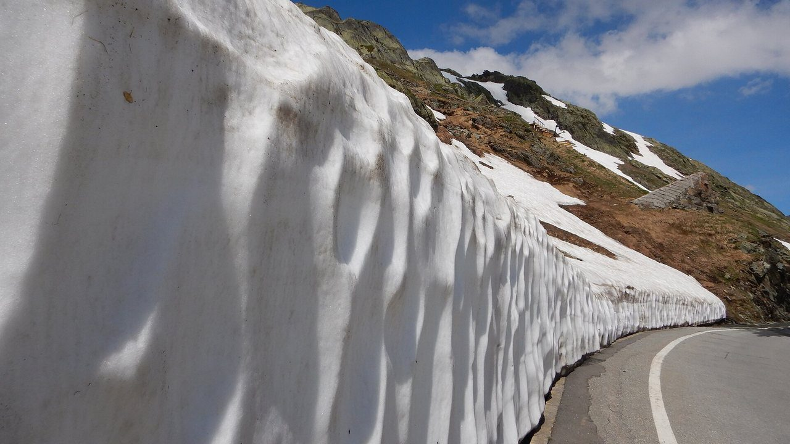

Race, Great St Bernard Pass

Behind
Best +0:01
371W
Target 418 W-47 W
- Cadence
- 87rpm
- Heart
- 140bpm
- Speed
- 26.5km/h
Work11 of 22
0:49
Next: · 2:20 at level 19
+5.1%
378 m climbed
8.24 km
18
Resistance / 32
Solo races your best-time ghost: position reads Ahead or Behind, and solo alone gets a Pause button. Frozen at 19:35.